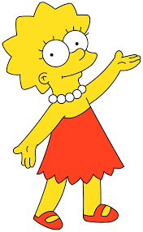

Lisa Simpson
Lisa Marie Simpson 34 es un personaje de la serie de televisión de dibujos animados Los Simpson. Es la hija del medio de Homer y Marge Simpson y hermana de Bart y Maggie. Goza de notable protagonismo y complejidad en la serie.
Lisa fue concebida por el caricaturista Matt Groening y debutó en la televisión el 19 de abril de 1987, en el cortometraje de dibujos animados titulado Good Night del programa de variedades El show de Tracey Ullman.
Yeardley Smith presta su voz para Lisa (y ocasionalmente a otros personajes de la serie) en la versión original de Estados Unidos.5 En la versión española, el personaje es doblado por Isacha Mengibar. En la versión hispanoamericana fue interpretada por la actriz de doblaje Patricia Acevedo hasta el final de la decimoquinta temporada, y debido a problemas con la empresa de doblaje y con la Fox, fue reemplazada por Nallely Solís a partir de la temporada 16, y a partir de la temporada 27 las canciones son interpretadas por Maggie Vera.